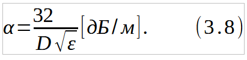

Цель занятия: Расчет и определение минимальной толщины экрана и длины трубки в трубчатом волноводе, при помощи которой выводят ручку управления из экранирующей камеры, обеспечивающих необходимую мощность облучения, с учетом требований по защите обслуживающего персонала от воздействия ЭМИ.
Действие электромагнитных полей высокой частоты на организм человека может вызвать тяжелые заболевания. Превышение определенных уровней облучения приводят к расстройству нервной и сердечно-сосудистой системы. Защита человека от вредного действия ионизирующих излучений сводится к защите от внешнего и внутреннего облучений. Защита осуществляется комплексом следующих мероприятий:
Электромагнитное поле (ЭМП) радиочастот характеризуется способностью нагревать материалы; распространяться в пространстве и отражаться от границы раздела двух сред; взаимодействовать с веществом. При оценке условий труда учитываются время воздействия ЭМП и характер облучения работающих.
Электромагнитные волны лишь частично поглощаются тканями биологического объекта, поэтому биологический эффект зависит от физических параметров ЭМП радиочастот: длины волны (частоты колебаний), интенсивности и режима излучения (непрерывный, прерывистый, импульсно-модулированный), продолжительности и характера облучения организма (постоянное, интермиттирующее), а также от площади облучаемой поверхности и анатомического строения органа или ткани. Степень поглощения энергии тканями зависит от их способности к ее отражению на границах раздела, определяемой содержанием воды в тканях и другими их особенностями. При воздействии ЭМП на биологический объект происходит преобразование электромагнитной энергии внешнего поля в тепловую, что сопровождается повышением температуры тела или локальным избирательным нагревом тканей, органов, клеток, особенно с плохой терморегуляцией (хрусталик, стекловидное зло, семенники, и др.). Тепловой эффект зависит от интенсивности давности облучения.
Действие ЭМИ радиочастот на центральную нервную систему при плотности потока энергий (ППЭ) более 1 мВт/см2 свидетельствует о ее высокой чувствительности к электромагнитным излучениям.
Изменения в крови наблюдаются, как правило, при ППЭ выше 10 мВт/см3. При меньших уровнях воздействия наблюдаются фазовые изменения количества лейкоцитов, эритроцитов и гемоглобина (чаще лейкоцитоз, повышение эритроцитов и гемоглобина). При длительном воздействии ЭМП происходит физиологическая адаптация или ослабление иммунологических реакций.
Поражение глаз в виде помутнения хрусталика катаракты является одним из наиболее характерных специфических последствий воздействия ЭМП в условиях производства. Помимо этого следует иметь в виду и возможность неблагоприятного воздействия ЭМП облучения на сетчатку и другие анатомические образования зрительного анализатора.
Исходные данные
Таблица 1
Таблица 2
Для решения задач по созданию безопасных условий работы с источниками ионизирующих излучений необходимо изучить основные величины, от которых зависят дозы облучения и единицы их измерения, уяснив принципы действия приборов дозиметрического контроля.
Ионизирующее излучение - это явление, связанное с радиоактивностью. Радиоактивность - самопроизвольное превращение ядер атомов одних элементов в другие, сопровождающееся испусканием ионизирующих излучений.
В зависимости от периода полураспада различают короткоживущие изотопы, период полураспада которых исчисляется долями секунды, минуты, часами, сутками, и долгоживущие изотопы, период полураспада которых от нескольких месяцев до миллиардов лет.
В СВЧ передатчике имеется выходной кондуктор, содержащий катушку с переменной индуктивностью. Радиус катушки равен г, число витков W, сила тока в катушки и его частота равны I и f соответственно. В течении рабочего дня суммарное время регулировок с помощью ручки управления не превышает Т часов.
Схема для расчёта выходного контура, приведена на рисунке 3.1
При решении задачи можно воспользоваться приведенной ниже методикой.
Напряжённость магнитной составляющей поля катушки Н На расстоянии R от нее (без экрана) может быть рассчитана:
где βт - коэффициент, определяемый соотношением R/r ( если R/r >10 значение то βт = l).
Если R удовлетворяет условиям, то имеет место волновая зона, оценку эффективности поля в которой производят по плотности потока энергии ППЭ.
где λ - длина волны [м]
Допустимая величина ППЭ определяется по формуле
где N = 2 Bt·ч/m2
Т- время облучения, ч.
Требуемое ослабление электромагнитного поля L можно определить по формуле:
Зная характеристики металла (см. таблица 3.2), можно рассчитать толщину экрана М обеспечивающую заданное ослабление электромагнитного поля L
где ω - угловая частота, 1/с:
μa - абсолютная магнитная проницаемость, Гн/м;
γ - электрическая проводимость, I/Ом·м;
где μ0 = 4π ∙ 10^(-7) Гн/м - магнитная постоянная;
μ - относительная магнитная проницаемость среды.
Ручки управления выводят через стенки экранирующей камеры при помощи трубок, впаянных в стенки и представляющих собой волноводные (при диэлектрическом стержне) или коаксиальные (при металлическом стержне) линии. На рис. 3.2 показан вывод ручки управления, насаженной на диэлектрический стержень 1, который находится внутри металлической трубки 2. Такая конструкция может рассматриваться как волноводная линия.
Ослабление энергии в трубке - волноводе на 1 м длины определяется по формуле:

где D - диаметр, м;
ε - относительная диэлектрическая постоянная стержня
Материал экрана: сталь μ = 200 ; медь μ = 1; материал стержня: гетинакс ε = 7; текстолит ε = 8; эбонит ε - 3; стекло текстолит ε = 7,5
Требуемую длину трубки можно определить по формуле